문제 정의
우리는 로봇 기반 반무인 자동화 신발 매장에서 손님이 서비스를 요청할 때 로봇이 자율적으로 해당 위치로 이동하여 안내하는 시스템을 목표로 합니다. 키오스크나 앱 없이 자연스러운 몸짓(손 들기)만으로 로봇을 호출할 수 있다면 사용자 편의성은 크게 향상됩니다. 이를 위해 천장 또는 높은 위치에 설치된 상위뷰(top-view) 카메라로 피규어의 포즈를 분류하고 해당 픽셀 좌표를 로봇 맵 좌표계로 변환한 뒤 ROS2 네비게이션 스택(Nav2)에 목표 좌표를 발행하는 파이프라인을 설계하였습니다.
기존 카메라 기반 행동 인식 연구들은 정면 뷰나 깊이 센서를 활용하는 경우가 많습니다. 그러나 매장 환경에서 천장에 고정된 상위뷰 카메라는 사각지대 없이 전체 공간을 관찰할 수 있고, 손님의 얼굴이 직접 노출되지 않아 프라이버시 측면에서도 유리합니다. 이 관점에서 우리는 상위뷰 영상에서 피규어(figure) 형태의 마커를 통해 포즈를 분류하는 방식을 채택하였습니다. 작은 피규어를 이용한 이유는 실제 사람과 달리 외형이 일정하고 라벨링이 용이하여 모델 학습의 일관성을 확보하기 위함입니다.
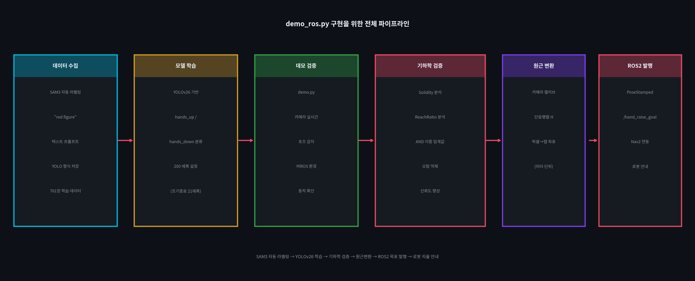
Fig 1. demo_ros.py 구현을 위한 전체 파이프라인. 사용자가 피규어로 손을 들면, 상위뷰 카메라가 이를 포착하여 YOLO 모델과 기하학 검증기가 포즈를 판별하고, 원근 변환을 통해 로봇 맵 좌표로 변환한 뒤 ROS2 Topic으로 목표를 발행합니다.과제 설명
이 시스템의 핵심 과제는 다음과 같습니다.
- 상위뷰 카메라에서 들어오는 실시간 프레임에서 피규어를 탐지하고
hands_up/hands_down두 가지 클래스로 포즈를 분류합니다. - 단순 YOLO 분류 결과만으로는 오탐(false positive)이 발생할 수 있으므로, 마스크 형상 기반의 기하학적 이중 검증(Solidity + ReachRatio)을 추가 필터로 적용합니다.
hands_up이 감지된 피규어의 바운딩 박스 중심 픽셀 좌표를 단응행렬(Homography Matrix) H를 통해 로봇 맵의 미터 단위 좌표로 변환합니다.- 변환된 맵 좌표를 ROS2
PoseStamped메시지로/hand_raise_goal토픽에 발행하여 Nav2 스택이 로봇을 자율적으로 이동시킵니다. - 5초 쿨다운(cooldown) 제어를 두어 동일 피규어가 연속으로 여러 번 목표를 발행하는 것을 방지합니다.
demo_ros.py가 최종 통합 실행 파일이며,
데이터 수집 및 모델 학습, 기하학 검증 모듈 개발, 원근 변환 캘리브레이션은
모두 이 파일을 운용하기 위한 사전 과정입니다.
데이터셋 및 전처리
데이터 수집
우리는 dataset_standing/ 경로에 커스텀 데이터셋을 구축하였습니다.
실제 매장 환경과 유사한 설정에서 상위뷰 카메라(1280×720, 30fps)로 피규어를 촬영하였으며,
최종적으로 761장의 학습 이미지와 127장의 검증 이미지를
확보하였습니다. 클래스는 hands_up(양팔을 뻗은 자세)과
hands_down(팔을 내린 자세) 두 가지입니다.
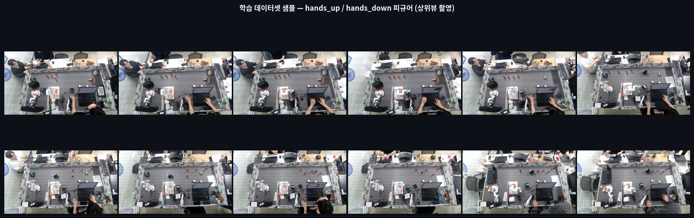
Fig 2. 학습 데이터셋 샘플. 상위뷰 카메라로 촬영한 피규어 이미지로, hands_up과 hands_down 두 클래스를 포함합니다.SAM3 자동 라벨링
수백 장의 이미지를 수동으로 라벨링하는 것은 매우 비효율적입니다.
이를 해결하기 위해 label.py에서 Meta의
SAM3(Segment Anything Model 3)를 활용하여
텍스트 프롬프트 기반 자동 라벨링 파이프라인을 구축하였습니다.
카메라 프레임에서 "red figure"라는 텍스트 프롬프트를 입력하면
SAM3가 해당 객체의 마스크를 자동으로 생성하고, 이를 YOLO 형식의 바운딩 박스로 변환하여 저장합니다.
# SAM3 자동 라벨링 설정
overrides = dict(conf=CONF_THRESH, task="segment", mode="predict",
model=MODEL_PATH, half=True, save=False)
predictor = SAM3SemanticPredictor(overrides=overrides)
def boxes_to_yolo(boxes_xyxy, img_w, img_h):
"""xyxy bbox 리스트 → YOLO 포맷 (정규화된 cx cy w h)"""
lines = []
for box in boxes_xyxy:
x1, y1, x2, y2 = box
cx = ((x1 + x2) / 2) / img_w
cy = ((y1 + y2) / 2) / img_h
w = (x2 - x1) / img_w
h = (y2 - y1) / img_h
cx, cy = min(max(cx, 0), 1), min(max(cy, 0), 1)
w, h = min(max(w, 0), 1), min(max(h, 0), 1)
if w > 0.01 and h > 0.01:
lines.append(f"{CLASS_ID} {cx:.6f} {cy:.6f} {w:.6f} {h:.6f}")
return lines
S 키로 수동 저장, A 키로 자동 저장 모드(N프레임마다 1장)를 전환할 수 있어,
약 300장 이상의 이미지를 빠르게 수집할 수 있었습니다.
검증셋 비율(15%)도 수집 시점에 자동으로 분리됩니다.
카메라 왜곡 보정
상위뷰 카메라는 광각 렌즈를 사용하는 경우가 많아 방사형 왜곡(radial distortion)이 발생할 수 있습니다.
demo_ros.py는 사전에 캘리브레이션된 camera_matrix와
dist_coeffs를 불러와 매 프레임마다 왜곡 보정을 적용합니다.
왜곡 보정 맵(cv2.initUndistortRectifyMap)을 미리 계산해 두어 실시간 처리 성능을 유지합니다.
def build_undistort_maps(K, D, w, h):
new_K, _ = cv2.getOptimalNewCameraMatrix(K, D, (w, h), 0, (w, h))
m1, m2 = cv2.initUndistortRectifyMap(
K, D, None, new_K, (w, h), cv2.CV_16SC2)
return m1, m2제안 모델
베이스라인: YOLOv26 기반 포즈 분류
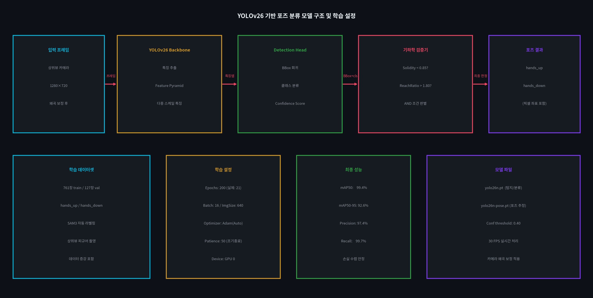
Fig 3. YOLOv26 기반 포즈 분류 모델 구조. 상위 절반은 추론 파이프라인, 하위 절반은 학습 설정과 최종 성능을 나타냅니다.
베이스라인으로 YOLOv26(yolo26n.pt) 모델을 사용합니다.
이 모델은 실시간 객체 탐지에 최적화되어 있으며,
hands_up / hands_down 두 클래스에 대해 커스텀 파인튜닝을 수행합니다.
경량화된 구조로 높은 mAP를 달성하며, Detection Head가 각 앵커에 대해
바운딩 박스 좌표와 클래스 확률을 동시에 예측합니다.
포즈 추정(3차 검증)에는 동일 계열의 yolo26n-pose.pt를 사용합니다.
학습 목표
hands_up과hands_down클래스를 공유 임베딩 공간에서 명확히 분리하는 특징 표현을 학습합니다.- 상위뷰 시점의 피규어 실루엣 변화(팔 돌출 여부)를 주요 판별 단서로 활용합니다.
- 실제 환경에서
hands_down상태가 훨씬 많이 발생하므로, YOLOv26 내장 증강 파이프라인(모자이크, 뒤집기, 색상 지터링 등)을 활용합니다.
model.train(
data = str(DATA_YAML),
epochs = 200, # 실제 조기종료: 21 에폭
imgsz = 640,
batch = 16,
device = 0, # GPU
project = str(OUTPUT_DIR),
name = "standing_v3",
patience = 50, # 50 에폭 이내 개선 없으면 조기종료
save = True,
plots = True,
)우리의 모델: 기하학적 이중 검증
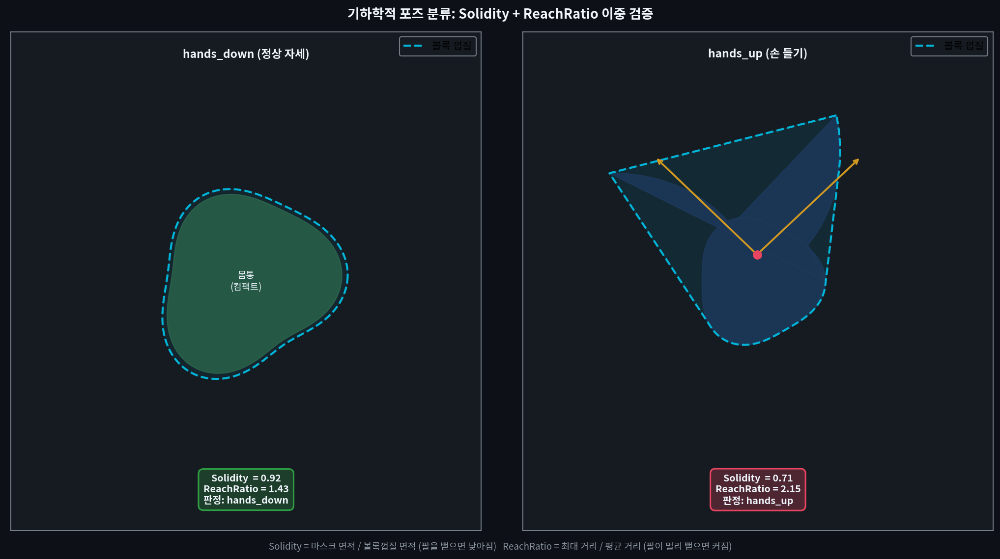
Fig 4. 기하학적 포즈 분류 개념도. hands_down(왼쪽)은 Solidity가 높고 ReachRatio가 낮으며, hands_up(오른쪽)은 팔이 뻗어나와 Solidity가 낮고 ReachRatio가 높습니다.YOLOv26 단독으로는 배경 객체나 조명 변화로 인한 오탐이 발생할 수 있습니다. 우리는 YOLO의 탐지 결과를 기하학적 이중 검증으로 한 번 더 필터링합니다. 이 방식은 픽셀 좌표계에서의 방향에 무관하기 때문에, 피규어의 위치나 방향과 상관없이 안정적으로 동작합니다.
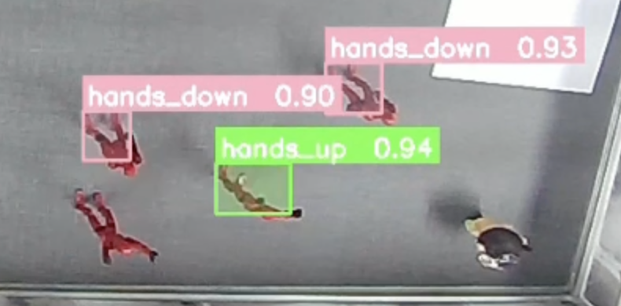
Fig 4-1. 상위뷰에서 단순 객체 탐지만 사용할 때의 오인식 예시입니다.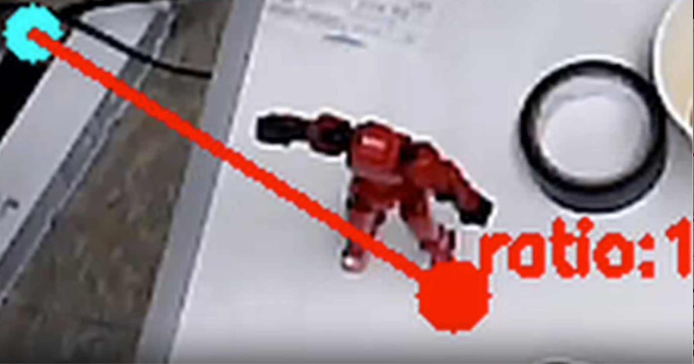
Fig 4-2. 작은 피규어와 상위뷰 각도 때문에 pose estimation만으로 안정 판정하기 어려운 예시입니다.Solidity (솔리디티)
마스크 면적(Mask Area)을 볼록 껍질 면적(Convex Hull Area)으로 나눈 값입니다. 피규어가 팔을 뻗으면 겨드랑이 부근에 오목한 부분이 생기고, 볼록 껍질과 마스크 사이의 빈 공간이 커지므로 Solidity가 낮아집니다.
ReachRatio (리치레이시오)
마스크 픽셀들의 중심에서 95번째 백분위수 거리를 평균 거리로 나눈 값입니다. 팔이 몸통보다 훨씬 멀리 뻗으면 최대 거리가 증가하여 ReachRatio가 커집니다. 단순 최댓값 대신 95th percentile을 사용하여 노이즈 픽셀 하나가 결과를 오염시키는 문제를 방지합니다.
AND 조건 판정
이전 버전에서는 두 신호 중 하나라도 임계값을 넘으면 hands_up으로 판정하는
OR 로직을 사용했습니다. 그러나 Solidity만 낮아도 오작동하는 문제가 반복되어,
최종적으로 두 신호 모두 임계값을 초과해야만
hands_up으로 판정하는 AND 로직으로 변경하였습니다.
SOLIDITY_THRESH = 0.85 # 이 값보다 낮으면 팔 돌출로 판단
REACH_THRESH = 1.80 # 이 값보다 높으면 팔이 멀리 뻗은 것으로 판단
def classify_pose_geometric(frame, x1, y1, x2, y2,
sol_thresh, reach_thresh, debug=False):
# ... 배경 분리, 컨투어 추출, 볼록껍질 계산 ...
# Solidity: 볼록껍질 대비 마스크 충실도
hull = cv2.convexHull(cnt)
hull_area = cv2.contourArea(hull)
solidity = mask_area / (hull_area + 1e-6)
# ReachRatio: 중심 기준 팔 뻗은 정도 (95th percentile)
dists = np.linalg.norm(pts - centroid, axis=1)
reach_ratio = np.percentile(dists, 95) / (dists.mean() + 1e-6)
sol_signal = (sol_thresh - solidity) / sol_thresh
reach_signal = (reach_ratio - reach_thresh) / (reach_thresh - 1.0)
# AND 로직: 두 신호가 모두 임계값을 넘어야 hands_up
score = min(sol_signal, reach_signal)
if score > 0.0: # 둘 다 초과 → hands_up
return "hands_up", score
elif score < 0.0: # 하나라도 이내 → hands_down
return "hands_down", -score
return None, score # 경계값 → YOLO 결과 사용또한 실시간으로 트랙바(Trackbar)를 통해 임계값을 조절할 수 있어, 현장 환경에 맞게 파라미터를 튜닝할 수 있습니다.
SAM3 / YOLOv26 모델 개선 과정
본 프로젝트는 실제 사람 인식이 아니라 상위뷰 피규어 마커 기반 호출 시스템을 목표로 합니다. 따라서 사람의 전신 키포인트를 안정적으로 추정하는 문제보다는, 작은 피규어의 실루엣에서 팔이 올라간 상태와 내려간 상태를 구분하는 문제로 범위를 좁혔습니다. 이 목적에는 일반적인 Object Detection이나 Pose Estimation을 단독으로 적용하는 것보다, SAM3로 라벨링을 보조하고 YOLOv26 세그멘테이션 모델을 학습한 뒤 기하학 검증을 추가하는 방식이 더 적합했습니다.
SAM3는 초기 라벨링 비용을 줄이는 데 사용했으며, 자동 생성된 라벨은 YOLO 형식으로 변환한 뒤
학습 데이터로 정제했습니다. 초기 모델에서는 hands_up과 hands_down을
특정 각도와 조명 조건에서 혼동하는 문제가 있었기 때문에, 오인식 사례를 추가 수집하여
데이터셋을 반복 개선했습니다. 이 과정은 최종 성능을 한 번에 증명하기보다는,
제한된 실험 환경에서 현장 안정성을 높이기 위한 반복 개선 절차로 볼 수 있습니다.
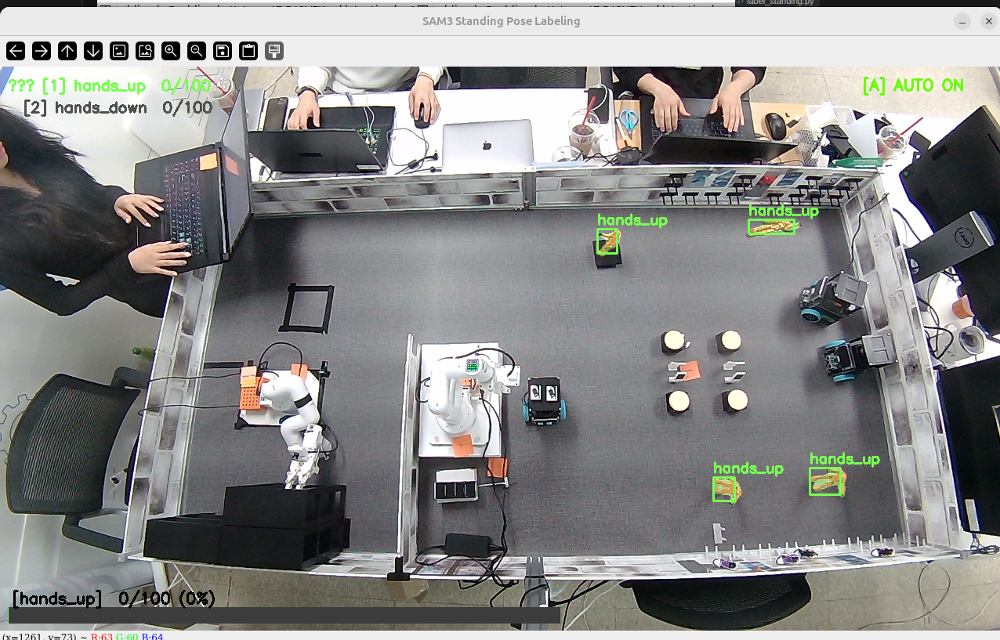
Fig 4-3. SAM3 기반hands_up 라벨링 및 검출 예시입니다.
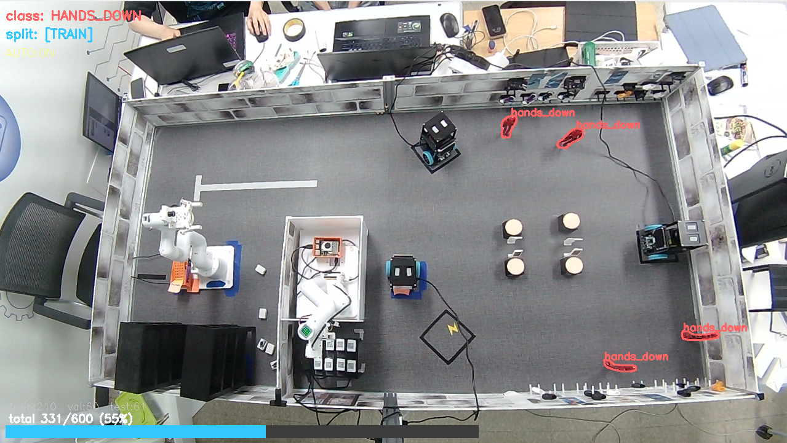
Fig 4-4. SAM3 기반hands_down 라벨링 및 검출 예시입니다.
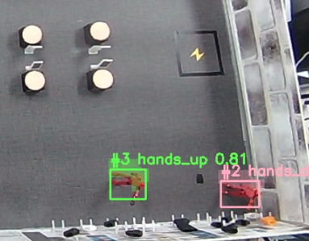
Fig 4-5.hands_up을 hands_down으로 오인식한 케이스입니다.
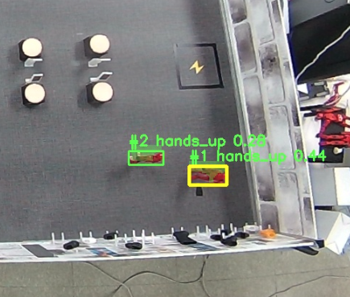
Fig 4-6. 오인식 데이터를 확장하며 모델을 개선한 과정입니다.| 모델 버전 | 개선 목적 | 관찰된 문제 | 조치 | 결과 |
|---|---|---|---|---|
mode_v1 |
1차 베이스라인 확보 | 상위뷰 각도에 따라 hands_up / hands_down 혼동 발생 |
기본 수집 데이터로 1차 학습 | 기준 모델과 주요 오인식 패턴 확인 |
mode_v2 |
오인식 감소 | 특정 배치에서 hands_down → hands_up, hands_up → hands_down 오분류 발생 |
오인식 샘플을 다시 수집하여 추가 학습 | 현장 오탐 케이스 감소 |
mode_v3 |
현장 안정화 | 조명, 피규어 방향, 배경 변화에 따른 불안정성 잔존 | 오인식 데이터 확장 및 세그멘테이션 결과 검토 | 제한된 실험 환경에서 정성적 안정성 향상 |
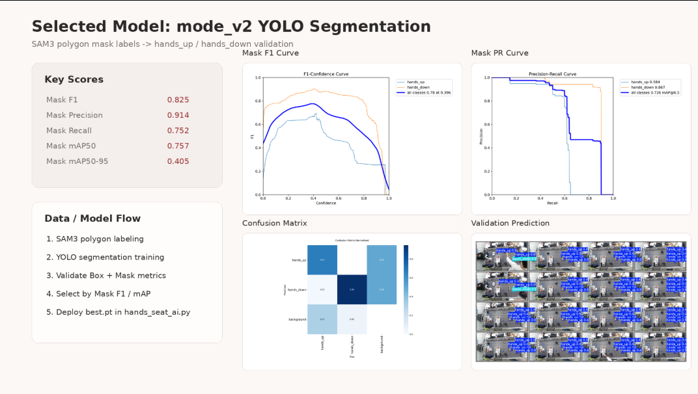
Fig 4-7. 선택 모델의 segmentation 검증 결과입니다.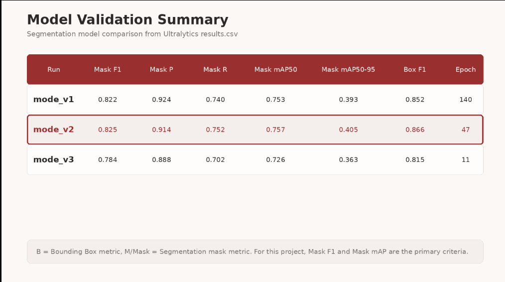
Fig 4-8. 모델별 검증 지표 요약입니다.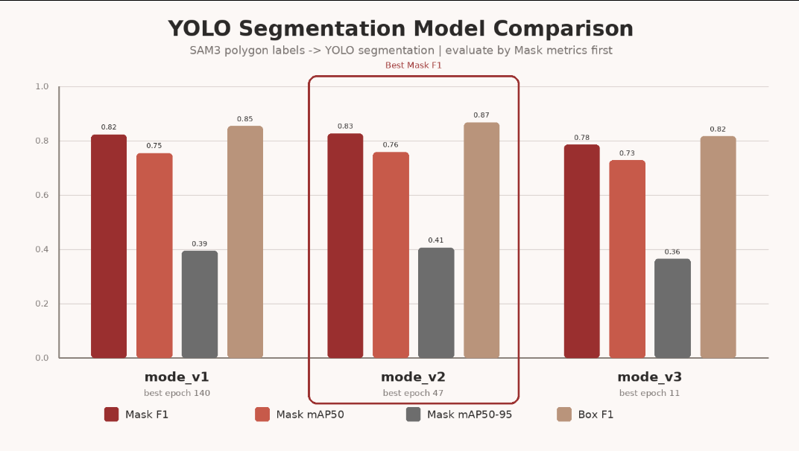
Fig 4-9. YOLO segmentation 모델 비교 결과입니다.원근 변환 및 맵 좌표 변환
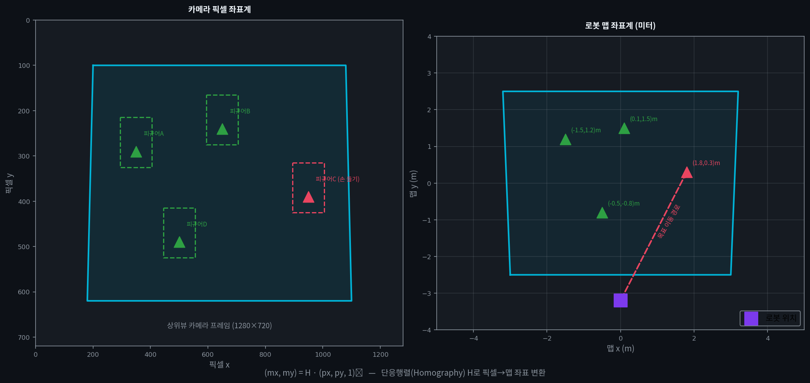
Fig 5. 상위뷰 픽셀 좌표계(왼쪽)에서 감지된 피규어 위치를 단응행렬 H를 통해 로봇 맵 좌표계(오른쪽)로 변환합니다. 변환된 좌표는 미터 단위로 Nav2에 전달됩니다.
hands_up이 감지된 피규어의 바운딩 박스 중심 픽셀
(px, py)를 로봇 맵의 미터 좌표 (mx, my)로 변환하기 위해
사전에 계산된 단응행렬(Homography Matrix) H를 사용합니다.
H는 /home/addinedu/perspective/result/H.npy에 저장되어 있으며,
카메라 위치 캘리브레이션을 통해 구해졌습니다.
def pixel_to_map_metric(px, py, H, map_height, resolution, origin):
pt = np.array([[[float(px), float(py)]]], dtype=np.float32)
mp = cv2.perspectiveTransform(pt, H)[0][0]
ox, oy, _ = origin
mx = ox + mp[0] * resolution
my = oy + (map_height - mp[1]) * resolution
return float(mx), float(my)
변환된 맵 좌표는 ROS2 PoseStamped 메시지로 발행되며,
Nav2 스택이 수신하여 로봇을 해당 위치로 이동시킵니다.
맵 파일(keepout_moosinsa.yaml, keepout_moosinsa.pgm)의
resolution과 origin을 읽어 좌표 변환에 사용합니다.
발표 자료에서는 이 과정을 매장 이미지(상단)와 로봇 맵(하단)의 좌표 매칭으로 설명했습니다. 카메라 이미지에서 선택한 7개의 기준점과 로봇 map 위의 대응 기준점을 연결해 단응행렬을 계산하고, 이후 감지된 손 든 피규어의 카메라 픽셀 좌표를 로봇이 실제로 이동할 수 있는 map 좌표로 변환합니다.
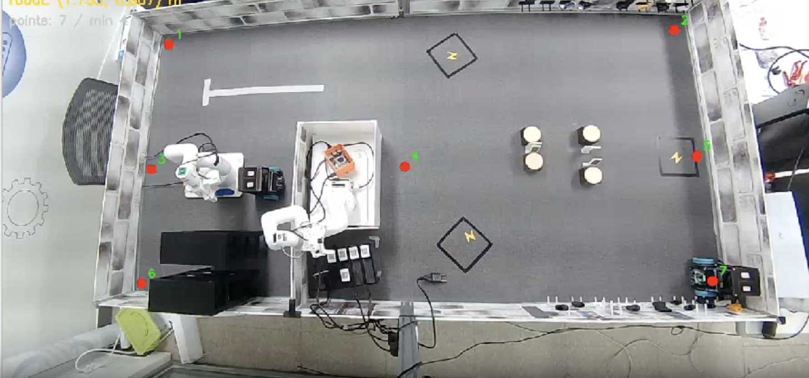
Fig 5-1. 상위뷰 매장 이미지의 기준점과 로봇 맵 기준점을 매칭해 좌표 변환을 구성한 화면입니다.# ROS2 PoseStamped 발행
msg = PoseStamped()
msg.header.stamp = self.get_clock().now().to_msg()
msg.header.frame_id = "map"
msg.pose.position.x = mx
msg.pose.position.y = my
msg.pose.position.z = 0.0
msg.pose.orientation.w = 1.0
self.pub.publish(msg)
self.get_logger().info(
f"[발행] hands_up → pixel=({cx},{cy}) map=({mx:.3f},{my:.3f}) m"
)시착 좌석 점유 판단
상위뷰 카메라 기반 인식은 손 든 피규어 위치 계산뿐 아니라, 고객이 어느 시착 좌석을 사용 중인지
판단하는 데에도 적용했습니다. 각 좌석은 ROI로 관리하며, 좌석별 상태를 EMPTY 또는
OCCUPIED로 분류해 매장 관리와 로봇 안내 흐름에서 함께 활용할 수 있도록 구성했습니다.
단순 픽셀 차이 비교는 조명 변화에 취약했기 때문에, 고정 threshold 대신 Otsu 이진화를
적용하여 프레임별 밝기 변화에 적응하도록 개선했습니다. 또한 가방, 옷, 그림자 때문에 좌석 점유 여부가
흔들리는 문제를 줄이기 위해 white_pixels, solidity, reach_ratio를
함께 사용했습니다. 단일 기준이 아니라 여러 지표의 복합 조건으로 OCCUPIED를 판단합니다.
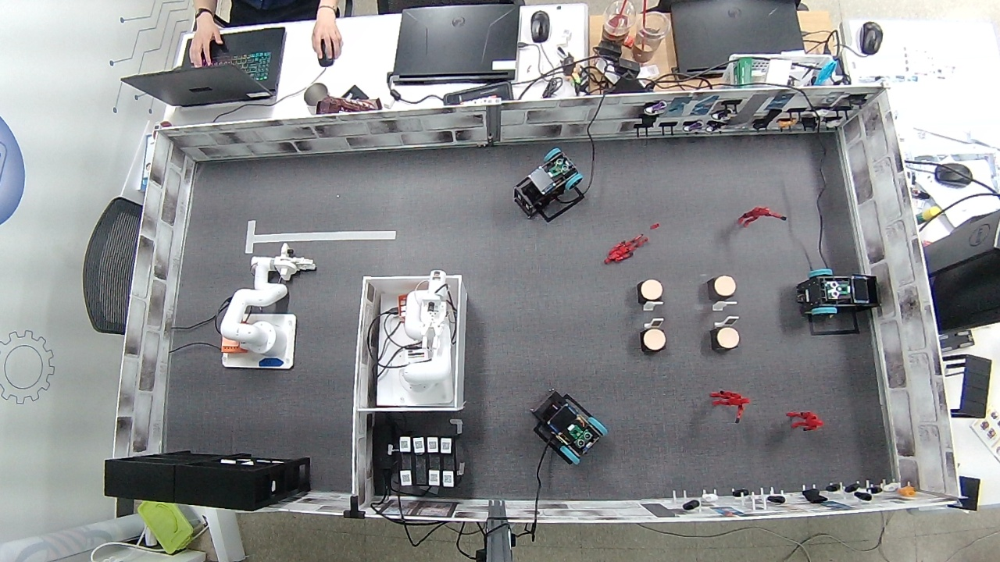
Fig 6. TVC 기반 시착 좌석 상태 관리 화면입니다.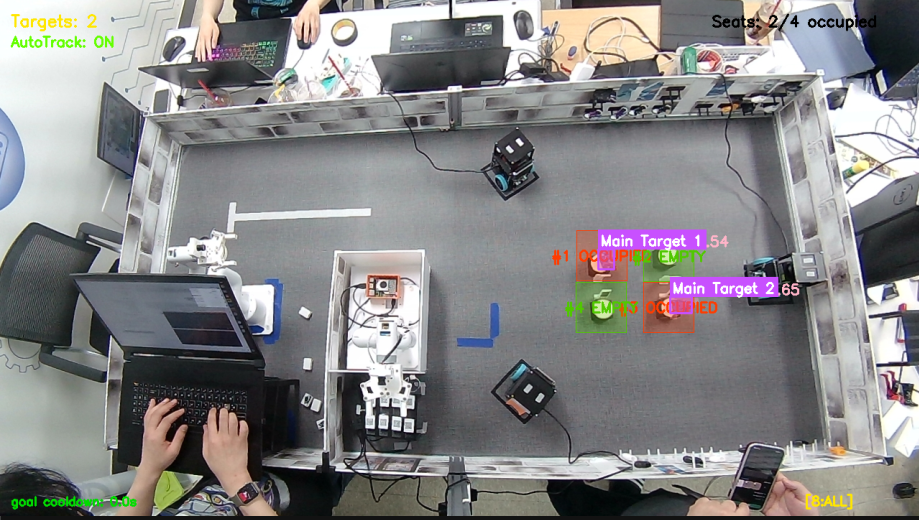
Fig 6-1. 좌석 ROI와 점유 상태를 함께 표시한 예시입니다.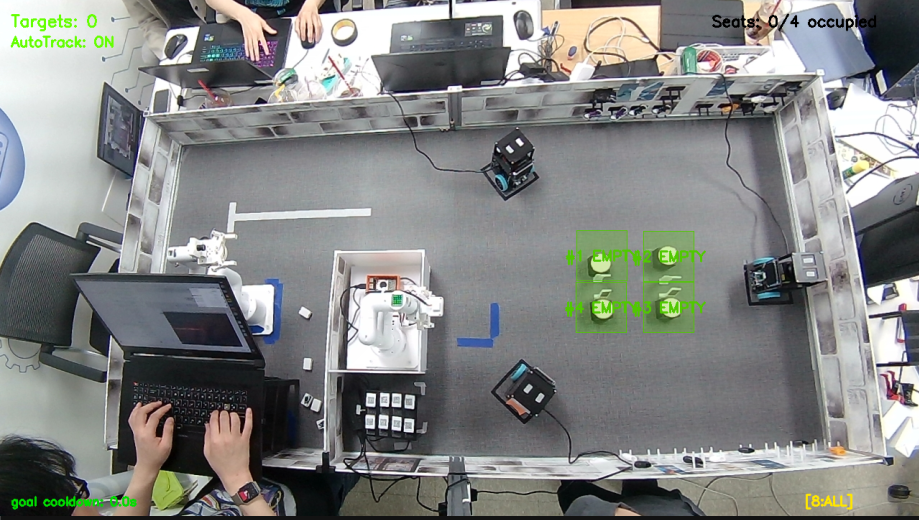
Fig 6-2. Otsu 기반 ROI 변화량으로 좌석 점유 여부를 판단한 결과입니다.학습 결과
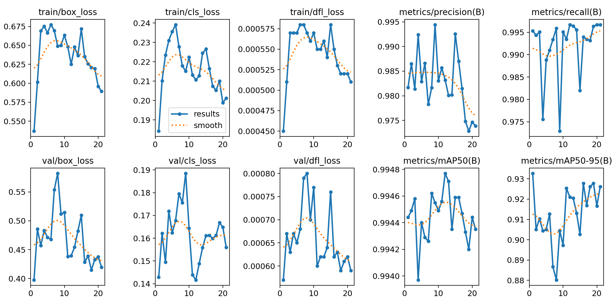
Fig 7. standing_v3 모델의 학습 곡선. 훈련 손실(왼쪽 상단)과 검증 손실(왼쪽 하단) 모두 빠르게 수렴하였으며, mAP50과 mAP50-95(오른쪽)는 초반부터 높은 수준을 유지합니다. 200 에폭을 설정하였으나 21 에폭에서 조기종료되었습니다.평가
평가 지표
우리는 객체 탐지 분야에서 표준적으로 사용되는 mAP(mean Average Precision)을 주요 평가 지표로 사용합니다. IoU 임계값 0.5에서의 mAP를 mAP50, IoU 0.5~0.95 범위의 평균을 mAP50-95라고 합니다. 이외에도 Precision, Recall, F1-Score를 함께 측정합니다.
로봇 안내 시스템에서는 오탐(false alarm)이 발생하면
로봇이 불필요하게 이동하므로, Precision과 Recall 모두 균형 있게 높아야 합니다.
우리가 설정한 Confidence 임계값 CONF=0.40이 두 지표의 최적 균형점임을
F1-Confidence 커브를 통해 확인하였습니다.
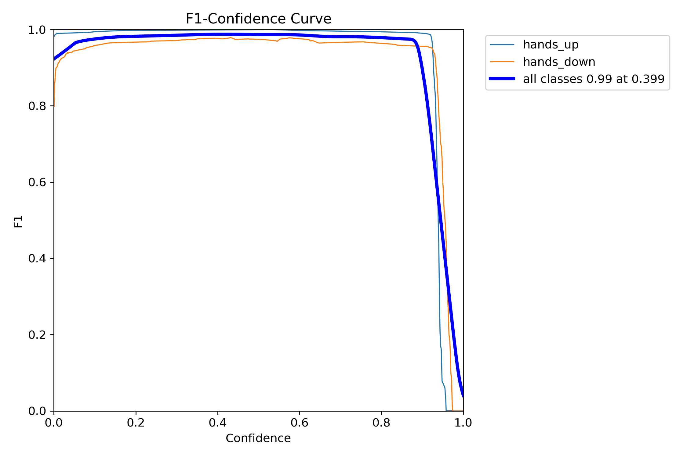
Fig 8. F1-Confidence 커브. Confidence 약 0.4 근방에서 F1이 최대를 기록합니다.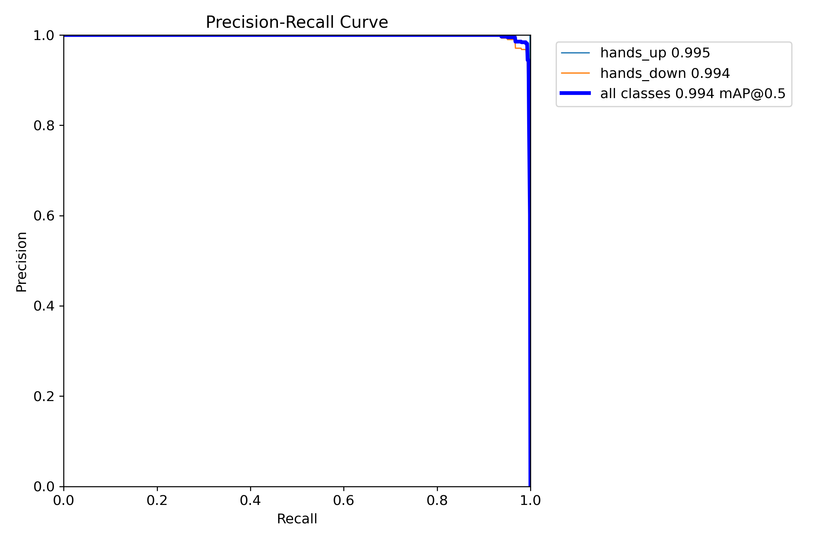
Fig 9. Precision-Recall 커브. 두 클래스 모두 mAP@0.5 = 0.995.정량적 결과
| 모델 | 학습 에폭 | mAP50 | mAP50-95 | Precision | Recall | F1 |
|---|---|---|---|---|---|---|
| YOLOv26 (standing_v3) | 21 / 200 (조기종료) | 99.4% | 92.6% | 97.4% | 99.7% | 98.5% |
학습은 200 에폭을 설정하였으나 21 에폭에서 조기종료(patience=50)되었습니다. 검증 지표는 현재 수집한 상위뷰 피규어 데이터셋 안에서는 두 클래스가 잘 분리되었음을 보여줍니다. 다만 데이터 규모가 크지 않고 촬영 환경이 제한적이므로, 이 수치는 모든 환경에서의 일반화 성능이라기보다 현재 실험 환경에서의 모델 적합도로 해석하는 것이 적절합니다.
정성적 결과
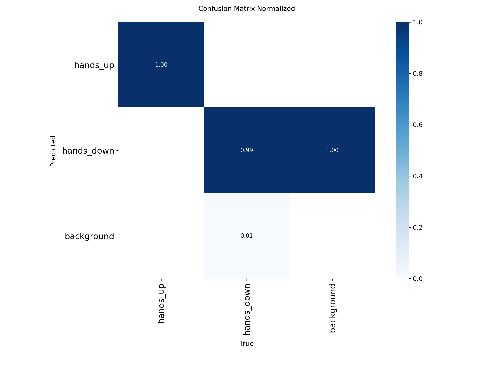
Fig 10. 정규화된 혼동 행렬(Confusion Matrix). 두 클래스 모두 정확하게 분류되었으며, 클래스 간 오분류 비율이 매우 낮습니다.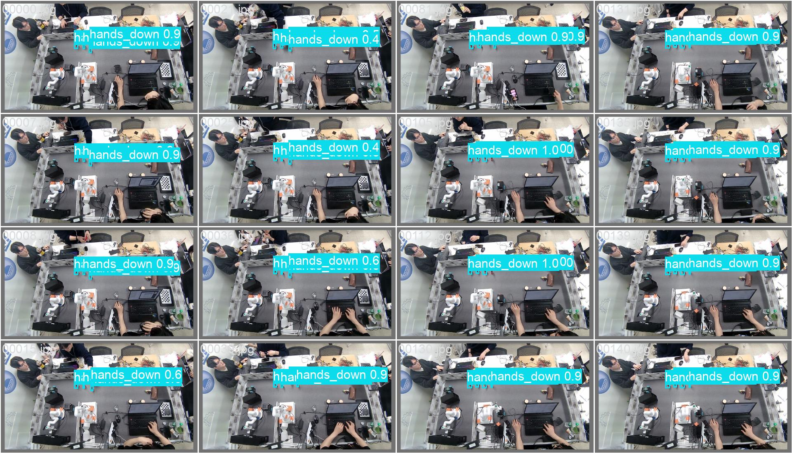
Fig 11. 검증 배치 예측 결과. 상위뷰에서 촬영된 피규어들에 대해 바운딩 박스와 클래스 레이블이 정확하게 표시되었습니다.분산 처리 아키텍처
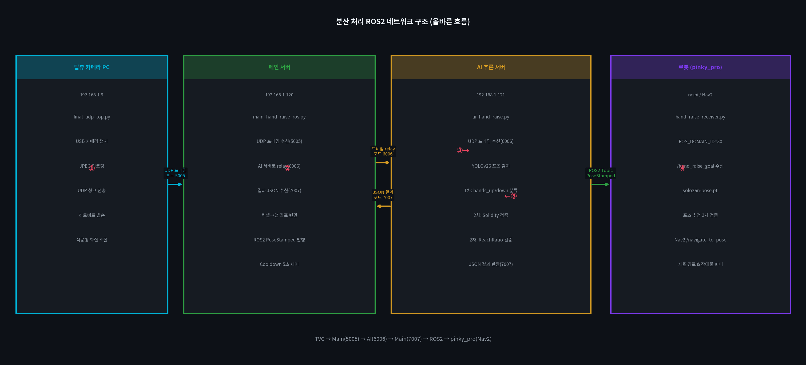
Fig 12. 분산 처리 기반 ROS2 네트워크 구조. 카메라 PC, AI 추론 서버, 메인 서버(ROS2), 로봇(Nav2)이 각각 독립적인 역할을 수행합니다.전체 시스템은 역할에 따라 네 개의 노드로 분리됩니다. AI 추론의 계산 부하가 크기 때문에 물리적으로 분리하여 처리 지연(latency)을 최소화하며, 실제 흐름은 TVC → 메인 → AI → 메인 → ROS2 → 로봇 순서입니다.
메인 서버가 카메라 프레임을 받아 AI 서버로 relay하고, 결과를 돌려받아 ROS2로 발행합니다.
① 탑뷰 카메라 PC (192.168.1.9)
final_udp_top.py가 실행되며, USB 카메라에서 30fps로 프레임을 캡처합니다.
JPEG으로 인코딩된 프레임을 청크(chunk) 단위로 분할하여
메인 서버 포트 5005로 UDP 전송합니다.
큐 점유율에 따라 JPEG 품질을 자동 조절하는 적응형 전송 방식을 사용하며,
2초 주기로 하트비트(heartbeat)를 발송하여 연결 상태를 모니터링합니다.
② 메인 서버 (192.168.1.120) — 허브 역할
main_hand_raise_ros.py가 실행됩니다. 두 가지 역할을 동시에 수행합니다.
- 프레임 중계: 카메라 PC로부터 UDP(5005)로 프레임을 수신하고, 즉시 AI 서버(192.168.1.121:6006)로 relay합니다.
- 결과 수신 및 발행: AI 서버로부터 JSON 결과를 포트 7007로 수신하여,
단응행렬 H로 픽셀 좌표를 맵 좌표로 변환하고
PoseStamped를/hand_raise_goal토픽으로 발행합니다. 5초 쿨다운 로직이 포함되어 있습니다.
# 메인 서버 포트 설정
CAM_LISTEN_PORT = 5005 # ① 카메라 → 메인
AI_SERVER_IP = "192.168.1.121"
AI_SERVER_PORT = 6006 # ② 메인 → AI (relay)
RESULT_LISTEN_PORT = 7007 # ③ AI → 메인 (결과 수신)③ AI 추론 서버 (192.168.1.121)
ai_hand_raise.py가 실행되며, 메인 서버로부터 UDP(6006)로 프레임을 수신합니다.
YOLOv26(yolo26n.pt)으로 1차 포즈 감지 후,
Solidity와 ReachRatio 기하학 검증으로 2차 필터링을 적용합니다.
hands_up으로 최종 판정된 피규어의 픽셀 좌표와 신뢰도를
JSON 형태로 메인 서버 포트 7007에 반환합니다.
④ 로봇 pinky_pro — 포즈 추정 3차 검증
hand_raise_receiver.py가 라즈베리파이(pinky_pro)에서 실행되며,
/hand_raise_goal 토픽을 수신합니다.
ROS_DOMAIN_ID=30 환경에서 동작합니다.
수신된 목표 좌표에 대해 yolo26n-pose.pt를 활용한
포즈 추정(keypoint detection) 3차 검증을 수행하여, 피규어가 실제로 손을 들고 있는지
최종 확인합니다. 검증을 통과하면 Nav2 /navigate_to_pose 액션으로
로봇을 자율 이동시킵니다. 이동 중에는 중복 goal을 자동으로 스킵합니다.
토론 및 향후 방향
미리 알았더라면 좋았을 것들
기하학 검증의 임계값 민감성. Solidity와 ReachRatio 임계값은 피규어의 종류, 카메라 높이, 조명 조건에 따라 달라집니다. 현재는 트랙바(trackbar)로 실시간 조절이 가능하지만, 환경이 달라질 때마다 재캘리브레이션이 필요합니다. 향후에는 환경에 따라 임계값을 자동으로 학습하는 적응형 방법을 도입할 수 있습니다.
OR 로직의 위험성.
초기에 Solidity 또는 ReachRatio 중 하나만 임계값을 넘어도
hands_up으로 판정하는 OR 방식을 사용했습니다.
그러나 조명 변화로 Solidity만 낮아지는 경우 빈번한 오탐이 발생하였습니다.
AND 로직으로 전환한 뒤 오탐률이 크게 줄었습니다.
알고리즘 설계 단계에서 더 엄격한 조건을 먼저 시도했다면 시간을 단축할 수 있었을 것입니다.
배경 분리의 어려움. 현재 마스크 추출에는 Otsu 임계화를 사용합니다. 조명이 균일하지 않거나 피규어 색상이 배경과 유사할 경우 마스크 품질이 저하될 수 있습니다. GrabCut이나 딥러닝 기반 세그멘테이션 모델을 사용하면 더 안정적인 마스크를 얻을 수 있지만, 실시간 처리 부하와의 균형을 고려해야 합니다.
UDP 패킷 손실. 네트워크 상태에 따라 UDP 청크가 손실되면 프레임이 재조립되지 않아 해당 프레임이 드롭됩니다. 현재는 타임아웃(2초)으로 처리하고 있으나, 중요도가 높은 프레임에 대해 재전송 메커니즘을 추가하거나 TCP로 전환하는 것을 고려할 수 있습니다.
향후 개선 방향
실제 사람 적용.
현재 시스템은 피규어를 마커로 사용합니다. 실제 사람의 손 들기 동작을 상위뷰에서 감지하기 위해서는
yolo26n-pose.pt 모델을 활용한 키포인트 기반 포즈 추정이 효과적입니다.
pose_detection/yolo26n-pose.pt 모델이 이미 준비되어 있으며,
이를 파이프라인에 통합하면 피규어 없이도 동작하는 시스템을 구현할 수 있습니다.
멀티 피규어 동시 처리.
현재 쿨다운 로직은 가장 먼저 감지된 hands_up 피규어에 대해서만 목표를 발행합니다.
여러 피규어가 동시에 손을 드는 경우 우선순위 큐(priority queue)를 도입하여
먼저 손을 든 피규어를 순서대로 처리하는 방식을 고려할 수 있습니다.
분산 처리 안정성 향상.
ROS2의 lifecycle 노드 개념을 도입하면 노드 상태를 체계적으로 관리할 수 있으며,
카메라 PC나 AI 서버가 오프라인 상태가 되었을 때 자동으로 감지하고
알림을 발생시키는 모니터링 시스템을 구현할 수 있습니다.
코드
전체 코드는 이 저장소에서 확인할 수 있습니다.
참고 문헌
- Jocher, G., et al. "Ultralytics YOLO." (2023). github.com/ultralytics/ultralytics
- Kirillov, A., et al. "Segment Anything." ICCV (2023).
- Macenski, S., et al. "Navigation2: The Next-Generation Navigation System for ROS." IROS (2020).
- Fischler, M. A., & Bolles, R. C. "Random sample consensus." Communications of the ACM, 24(6), 381-395 (1981). (단응행렬 RANSAC 기반 추정)